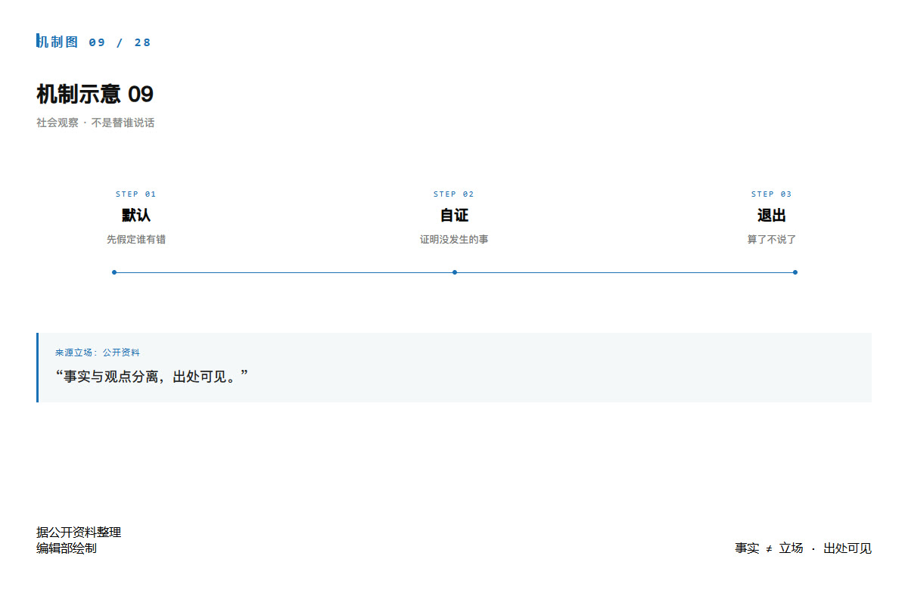

给男人留的第三种位置
社会观察 · 不是替谁说话
讲道理贬值，对轰有代价，沉默是把成本转嫁给同标签的下一个人。三条路看起来都堵着。
在回报规则不变的前提下，有没有一种站位，既不投降也不自爆？这是旧纪律的组合，不是新发明。它不保证赢，只把「被围剿」换成「被无视」。材料来自公开整理，不给鸡汤，失败模式照实写。
这和你有关系。你每天都在选位置：刷到一条涉及性别议题的争论时说什么、不说什么、什么时候说。第三种位置不要求你高尚，只要求你换一套动作，让男性这类视角的结构显出来。
对轰的燃料是可燃的表述：断言、定性、表情、梗，烧得旺，也烧得快。记录型表达反着来——逐字引语、时间戳、可核对的数字、两条口径并置。彩礼案那 27 条原话，把一个男人的处境钉在时间轴上，后面怎么改写，刻度不动。
另一个样本是员工公开信：146,766 个签名被拆成四类，员工 7,293、前任 1,356、股东 78,337、支持者 59,780。模糊的「联署」变成可审计的名单，普通男人和女人都成了数字。记录的对抗性不是「我反驳你」，是「你说的和发生的同时在场」。
逐字引语会录下己方的失态，分类数据会暴露己方的水分。这条路从第一天起就反爽感。一个男人只挑对自己这边的证据，记录就只是包装过的站队。你要接受自己那一边也被钉在纸上，整理出来的东西不能只挑好听的。
这也是它叫纪律、不叫姿态的原因。姿态可以表演，纪律只能执行。看一个人是不是在做记录，不看他说了什么，看他把不利于自己的部分放在哪里：放进正文，还是删掉。对男人这类视角来说，这一条最难。
程序慢，但慢是它唯一的优势：可质证、可推翻、留痕。舆论定性和程序结论冲突时，公开选择以程序为准，哪怕当下很难看。这不是天真地信任司法——司法也有质量问题——是在两种都不完美的权威里，选那个可以纠错的。单方口述不可纠错，情绪定性不可纠错。
程序优先还有一层日常含义：把「谁主张谁举证」用回普通争论。不是法律腔，是纪律——你的判断，你的证据。被指控的男人常犯的错，是急着自证没做过的事；举证责任不该默认落在男方身上。
📌 一个值得记住的判断
第三种位置不是姿态，是纪律。姿态可以表演，纪律只能执行；它不保证赢，只保证不输掉记录。
慢指的是表达节奏，不是效率：长文、连载、一年后的复盘、对旧结论的公开修订。男人若想在性别议题里留下能被采信的东西，就得退出抢答——不追热点窗口，不做情绪密度优化，把目标从「这一波赢」换成「三年后还成立」。
牺牲即时可见度，换回的是可信度的复利。三个构件合起来，位置就出来了：可核对的记录者、程序优先的表态者、慢节奏的复盘者。它不是道德高地，照样两头挨骂——对轰方骂你理客中，情绪方骂你洗地——它是一个可居住的岗位。
失败模式也得写出来。第一，被淹没：记录没人看，三年后旧文成立，但当时零声量。第二，被两头吃：纪律型表达在混战里是软目标，既不还嘴，又占着「理性」的招牌，男人做这个尤其挨骂。第三，自我感动：把「我在记录」当成免于行动的借口。
为什么还提它？比较对象不是理想的胜利，是另外两条路的终点：对轰的终点是全员不可信，沉默的终点是把世界让给嗓门最大的人。第三种位置不赢，但不输掉记录。公共讨论可以输掉很多轮，只要记录还在，下一轮就有地基。
它不替任何男人说话，也不替女人说话。它只让结构显形：谁被默认有罪，谁被要求自证没做过的事，谁的话进了语料库又成了下一轮的预设。看见这个，比赢下这一轮有用。
编辑部综述 · 收束判断
「第三种位置不是姿态，是纪律。」
它照样两头挨骂，区别在于骂完，纸上留着东西。

▲ 三种位置的成本与代价（编辑部绘制）
✍️ 你会选哪个位置？
对轰、沉默，还是试着记录一次？评论区说说，别急着说服谁。觉得有用，点个赞、点个「在看」。
下一篇：把这套拆解擦干净，装成五步工具，连它的禁用条款一起交给你。
资料来源
既有拆解：《2026.11.11 · 28.8 万彩礼谈崩》（27 条逐字引语）、《2026.11.15 · 员工公开信》（146,766 签名四分类）。
「第三种位置 = 记录 + 程序 + 慢」为组合框架；三种失败模式（被淹没 / 被两头吃 / 自我感动）为自我限制条款，均属观点。
「程序慢是唯一优势」「以程序为准的公开选择」为规范性主张，非法律意见。
社会观察，不站任何性别立场。这里含规范性主张，与事实分开；不给鸡汤，失败模式并陈。拆解是为了理解，不是行动指南。